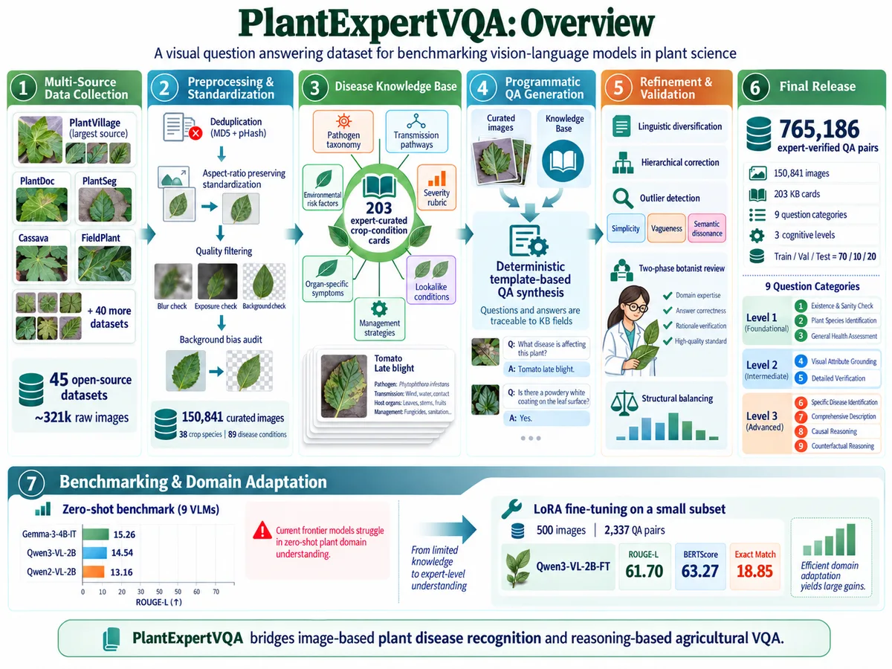
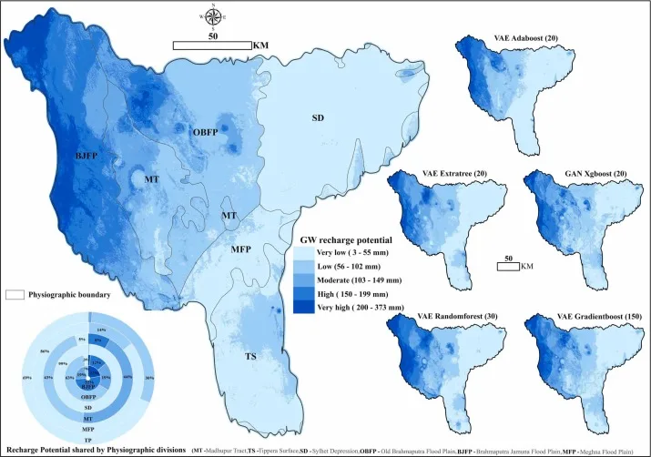
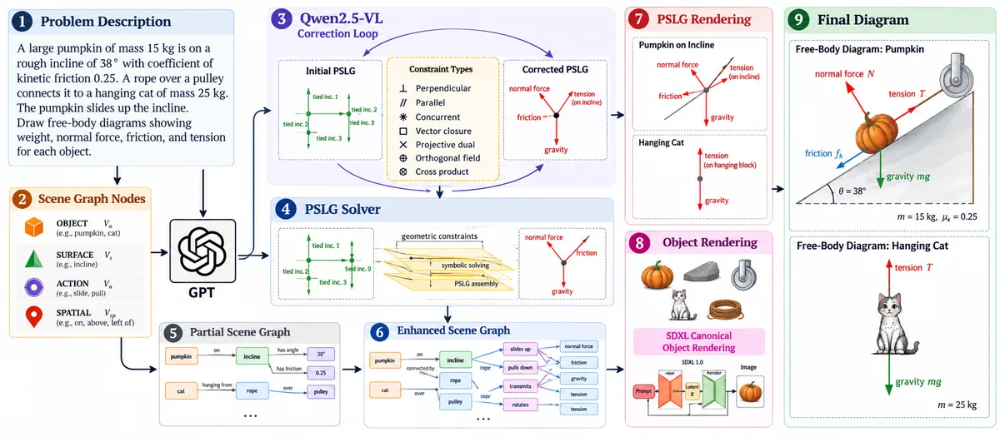
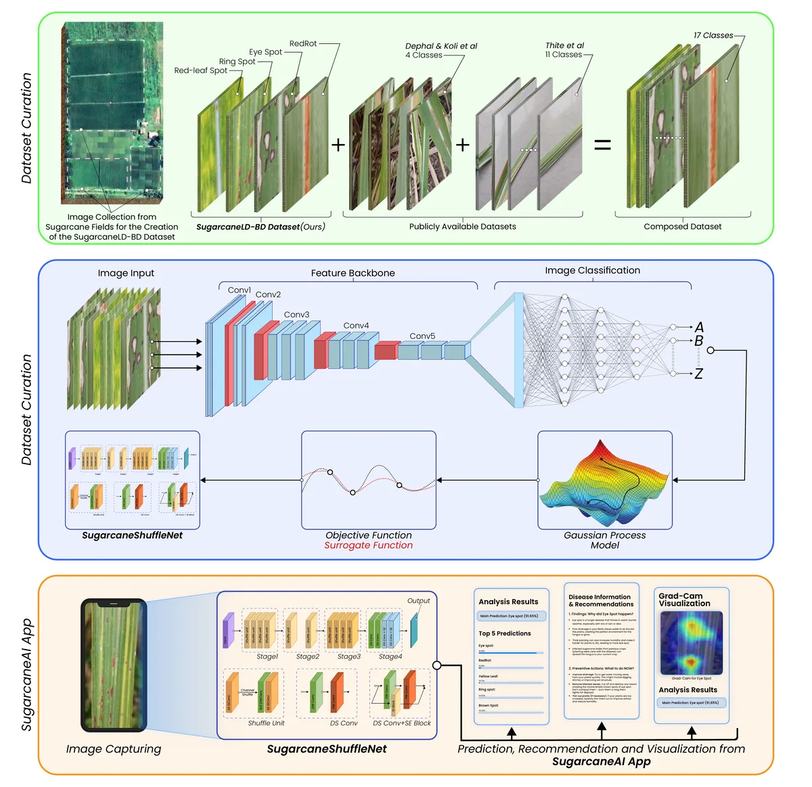

Publications
Peer-reviewed papers, workshop papers, and preprints. A complete list is also on Google Scholar.
2026
-
NeurIPS

MemeEconomy: Do LLM Agents Trade Ethics for Survival?
In Advances in Neural Information Processing Systems (NeurIPS), 2026
Main track. First author.
-
ACL Findings

Thinking Like a Botanist: Challenging Multimodal Language Models with Intent-Driven Chain-of-Inquiry
In Findings of the Association for Computational Linguistics: ACL 2026, 2026
First author.
Vision evaluations are typically done through multi-step processes. In most contemporary fields, experts analyze images using structured, evidence-based adaptive questioning. In plant pathology, botanists inspect leaf images, identify visual cues, infer diagnostic intent, and probe further with targeted questions that adapt to species, symptoms, and severity. This structured probing is crucial for accurate disease diagnosis and treatment formulation. Yet current vision-language models are evaluated on single-turn question answering. To address this gap, we introduce PlantInquiryVQA, a benchmark for studying multi-step, intent-driven visual reasoning in botanical diagnosis. We formalize a Chain of Inquiry framework modeling diagnostic trajectories as ordered question-answer sequences conditioned on grounded visual cues and explicit epistemic intent. We release a dataset of 24,950 expert-curated plant images and 138,068 question-answer pairs annotated with visual grounding, severity labels, and domain-specific reasoning templates. Evaluations on top-tier Multimodal Large Language Models reveal that while they describe visual symptoms adequately, they struggle with safe clinical reasoning and accurate diagnosis. Importantly, structured question-guided inquiry significantly improves diagnostic correctness, reduces hallucination, and increases reasoning efficiency. We hope PlantInquiryVQA serves as a foundational benchmark in advancing research to train diagnostic agents to reason like expert botanists rather than static classifiers.
-
NeurIPS Workshop

Unlearnable, or Unmeasured? On the Reliability of Difficulty Labels in RLVR
NeurIPS 2026 Workshop on Transitioning from Pre-Training to Post-Training, 2026
Reinforcement learning with verifiable rewards (RLVR) has become an important approach for improving reasoning during post-training. Recent work suggests that some difficult prompts remain resistant to learning even when they occasionally produce correct solutions. We revisit this unlearnability phenomenon and find that the affected prompts do improve, at roughly one third of the learnable rate, while the difficulty-defined set used to study them is much less reproducible than expected. These difficulty labels are estimated from a limited number of sampled responses. Combining them across seeds can further change which prompts are selected instead of simply reducing measurement noise. We develop a sampling-based framework for quantifying this instability and determining how much evaluation is required for difficulty assignments to reproduce reliably. We also revisit the gradient-similarity evidence proposed to explain unlearnability and show that part of the observed separation arises because difficult prompts provide fewer correct rollouts from which their gradients can be estimated. Matching this sample count weakens the gradient difference but does not remove it. Overall, the slow-learning phenomenon survives our reanalysis, while both the prompts used to define it and the evidence used to explain it require more careful measurement.
-
NeurIPS Workshop

The Surface You Test Is Not the Surface That Breaks
NeurIPS 2026 Workshop on Agents in the Wild: Safety, Security, and Beyond, 2026
Poster. First author.
Prompt-injection benchmarks for LLM agents typically test attacks through a single injection surface and report the resulting attack success rate as a property of the model. We ask whether those robustness conclusions remain stable when the same adversarial content enters through a different part of the agent interface. Using AgentDojo, we evaluate 13 LLMs across four task suites and place a byte-identical payload either in a tool output or in the tool description. This small change produces large differences in comparative robustness: 44.9% of all model pairs change their relative ordering across the two surfaces, with substantial ranking instability in every suite. The effect is especially pronounced for a small number of models, showing that a benchmark can substantially underestimate vulnerability when it tests only one surface. We further find that this behavior has predictive structure. Using three suites to identify the riskier surface for each model predicts the more vulnerable surface on an unseen suite with 76.9% accuracy. Defense results show the same dependence, as mitigations effective against tool-output attacks can leave substantial exposure through tool descriptions. Our results show that prompt-injection robustness is not surface-invariant and that agent evaluations should test the surfaces on which their security conclusions depend.
-
arXiv

Do Better Goal Representations Improve Goal-Conditioned Reinforcement Learning?
arXiv preprint arXiv:2609.39901, 2026
First author.
Goal-conditioned reinforcement learning (GCRL) relies heavily on how target goals are represented to the policy. While recent methods encode goals via temporal distance, occupancy, or controllability, it remains unclear how much downstream performance actually depends on representation quality. We study this in offline GCRL by constructing an exact temporal-distance goal representation in deterministic mazes. We then systematically corrupt its geometric quality while keeping the downstream learner fixed. Across OGBench navigation tasks and two algorithms, large changes in goal-representation quality produce almost no change in performance. However, applying the same interventions to the agent's current state more than doubles success, revealing the state pathway as the true bottleneck. Building on this insight, we show that simple random Fourier positional encodings substantially improve performance on the hardest navigation tasks without map information or objective modifications. Overall, our findings suggest that in state-based offline navigation, improving how the agent's current state is represented matters far more than refining the goal representation. Code will be released soon.
-
arXiv

Do Web Agents Investigate Before They Decide?
arXiv preprint arXiv:2602.05354, 2026
First author.
Autonomous web agents are increasingly deployed in moderation and policy enforcement, where correct decisions often depend on evidence that is not immediately visible and must be actively investigated. Yet existing benchmarks largely assume task critical information is immediately accessible. They do not measure investigative competence: recognizing when visible context is insufficient, retrieving hidden evidence, and integrating it into a final decision. We introduce MIRAGE, a benchmark of 750 multi step decision tasks across three domains: Wikipedia Forensics, Shopping Admin adjudication, and Reddit Moderation. Each task has two layers: a visible surface context that often points to the wrong action, and a hidden context, reachable only by active investigation, that contains the decisive evidence. We decompose agent performance into Investigation, Reasoning, and Decision Accuracy, complemented by an Investigative Hallucination Rate. We evaluate eight LLM agents across two model generations. Three patterns emerge. First, agents reach relevant pages but rarely extract the decisive evidence on them. Second, procedural hints improve investigation but do not consistently improve decisions on Wikipedia tasks, where decisive evidence often contradicts surface impressions. Third, 12.6% of trajectories cite fabricated facts. We call these the Navigation Discovery Gap, Collapse under Contradiction, and Investigative Hallucination. These patterns persist across model scale, generation, and reasoning architecture.
-
Scientific Data

PlantExpertVQA: A Visual Question Answering Dataset for Benchmarking Vision-Language Models in Plant Science
Scientific Data (Nature Portfolio), 2026
First author.
Existing plant-disease datasets target classification and detection, leaving vision-language models unable to support interactive, reasoning-based diagnosis. To address this, we present PlantExpertVQA, a large-scale visual question answering (VQA) dataset designed to advance vision-language models for agricultural decision-making. It is compiled from 45 open-source datasets, including the widely used PlantVillage corpus, and comprises 765,186 high-quality question-answer (QA) pairs grounded over 150,841 images spanning 38 crop species and 89 disease conditions. Questions are organized into 3 levels of cognitive complexity and 9 distinct categories. Each was phrased following expert guidance and generated via an automated two-stage pipeline: template-based QA synthesis from image metadata, followed by multi-stage linguistic re-engineering. The dataset was iteratively reviewed by domain experts for scientific accuracy and relevance. We find that current frontier vision-language models, including recent open-source instruction-tuned multimodal LLMs, perform poorly on PlantExpertVQA. However, parameter-efficient fine-tuning of a compact 2B-parameter model on a small fraction of the dataset yields substantial improvements across all question categories, demonstrating its effectiveness for domain adaptation.
-
J. Hydrology

Predicting Groundwater Recharge Potential across Various Physiographic Divisions of Bangladesh using Generative Data Augmentation
Journal of Hydrology: Regional Studies, 2026
Accepted.
-
arXiv

PhyDrawGen: Physically Grounded Diagram Generation from Natural Language
arXiv preprint arXiv:2605.30512, 2026
Generating physics diagrams from text requires strict adherence to physical laws. While current generative models produce visually plausible outputs, they systematically hallucinate force vectors, ignore conservation laws, and violate geometric constraints. We present PhyDrawGen, a neuro-symbolic pipeline that decouples semantic scene understanding from physical constraint satisfaction. First, a large language model extracts a typed scene graph from the problem text. A deterministic solver then converts this graph into a Planar Straight-Line Graph (PSLG), encoding force balance, optical paths, and field topologies as exact geometric primitives. Finally, a fine-tuned Qwen-VL model implements a visually grounded propose-verify loop to iteratively correct any constraint violations. Evaluated on a benchmark of 1,449 problems spanning mechanics, optics, and electromagnetism, PhyDrawGen significantly outperforms GPT-5-image, Gemini 2.5 Flash, and Gemini 3 Pro, demonstrating robust physical accuracy even on unusual-object problems.
2025
-
arXiv

SugarcaneShuffleNet: A Very Fast, Lightweight Convolutional Neural Network for Diagnosis of 15 Sugarcane Leaf Diseases
arXiv preprint arXiv:2508.17107, 2025
Despite progress in AI-based plant diagnostics, sugarcane farmers in low-resource regions remain vulnerable to leaf diseases due to the lack of scalable, efficient, and interpretable tools. Many deep learning models fail to generalize under real-world conditions and require substantial computational resources, limiting their use in resource-constrained regions. In this paper, we present SugarcaneLD-BD, a curated dataset for sugarcane leaf-disease classification; SugarcaneShuffleNet, an optimized lightweight model for rapid on-device diagnosis; and SugarcaneAI, a Progressive Web Application for field deployment. SugarcaneLD-BD contains 638 curated images across five classes, including four major sugarcane diseases, collected in Bangladesh under diverse field conditions and verified by expert pathologists. To enhance diversity, we combined SugarcaneLD-BD with two additional datasets, yielding a larger and more representative corpus. Our optimized model, SugarcaneShuffleNet, offers the best trade-off between speed and accuracy for real-time, on-device diagnosis. This 9.26 MB model achieved 98.02% accuracy, an F1-score of 0.98, and an average inference time of 4.14 ms per image. For comparison, we fine-tuned five other lightweight convolutional neural networks: MnasNet, EdgeNeXt, EfficientNet-Lite, MobileNet, and SqueezeNet via transfer learning and Bayesian optimization. MnasNet and EdgeNeXt achieved comparable accuracy to SugarcaneShuffleNet, but required significantly more parameters, memory, and computation, limiting their suitability for low-resource deployment. We integrate SugarcaneShuffleNet into SugarcaneAI, delivering Grad-CAM-based explanations in the field. Together, these contributions offer a diverse benchmark, efficient models for low-resource environments, and a practical tool for sugarcane disease classification. It spans varied lighting, backgrounds and devices used on-farm
No publications match that filter.